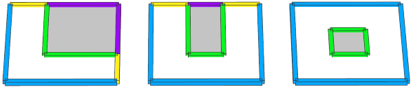
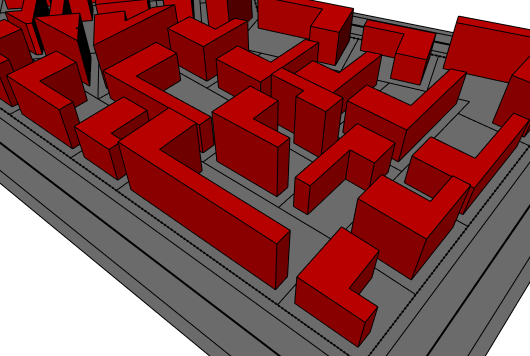
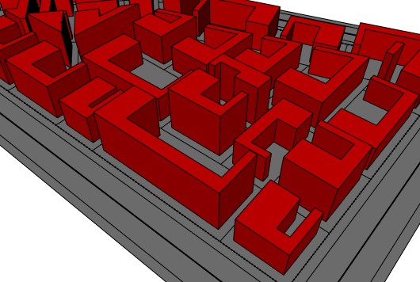
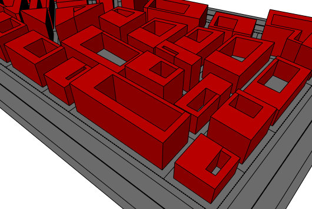

shapeL, shapeU, shapeO operations
frontWidth, leftWidth, rightWidth, backWidth float Width of the corresponding wing.
selector selector
| shape | The setback polygon (i.e. the L,U or O shape). |
| remainder | Selects the remainder of the polygon. |
operator The operator defines how the setback polygons are used to generate successor shapes. This also applies to shapes with more than one face.
| : | Each polygon is put into a new shape. |
| = | All polygons corresponding to the selector are combined into one new shape. |
operations A sequence of shape operations to execute on the newly created shape.
The shapeL, shapeU, shapeO operations select a number of edges, depending on predefined spatial selectors, and set them back by a user-defined distance.
These operations are another way of applying setbacks. For example
shapeL(frontWidth, leftWidth) { selector operator operations | ... }
can also be achieved with the setback operation and the comp function:
setback( comp(fe) { front=frontWidth | left=leftWidth } ) { selector operator operations | ... }
Component tags
The operations automatically apply semantic component tags to the resulting edge components (exactly like the setback operation):

| "setback.front" | Blue: original edges in shape. |
| "setback.back" | Green: new setback edges. |
| "setback.side" | Yellow: side edges. |
| "setback.remainder" | Purple: original edges in remainder. |
Left --> shapeL(4,4) { shape : Shape
| remainder: Remainder }
Middle --> shapeU(4,4,4) { ... }
Right --> shapeO(4,4,4,4) { ... }
For more information on working with component tags, refer to Auto-tags and Tag propagation.
Related
Examples
L-Shapes

attr myFrontDepth = 5
attr myLeftWidth = 11
LotInner -->
Lot
Lot -->
offset(-3, inside)
shapeL(myFrontDepth,myLeftWidth)
{ shape : Footprint | remainder: NIL }
Footprint -->
extrude(rand(10,20)) color(1,0,0)
U-Shapes

attr myFrontDepth = 5
attr myRightWidth = 3
attr myLeftWidth = 11
LotInner -->
Lot
Lot -->
offset(-3, inside)
shapeU(myFrontDepth,myRightWidth,myLeftWidth)
{ shape : Footprint | remainder: NIL }
Footprint -->
extrude(rand(10,20)) color(1,0,0)
O-Shapes

attr myFrontDepth = 5
attr myRightWidth = 3
attr myBackDepth = 2
attr myLeftWidth = 11
LotInner -->
Lot
Lot -->
offset(-3, inside)
shapeO(myFrontDepth,myRightWidth,myBackDepth,myLeftWidth)
{ shape : Footprint | remainder: NIL }
Footprint -->
extrude(rand(10,20)) color(1,0,0)